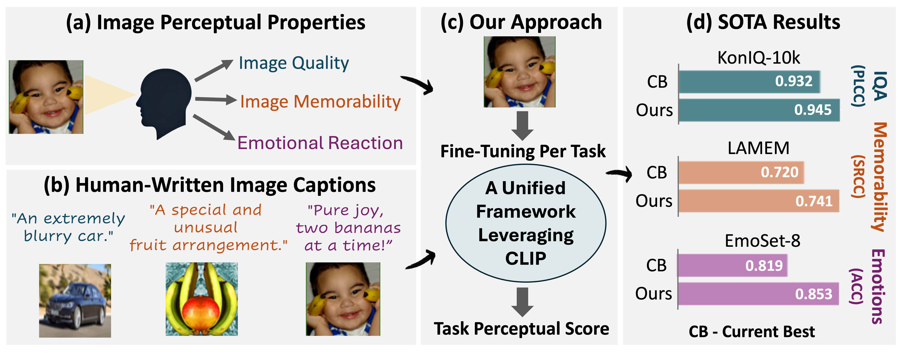
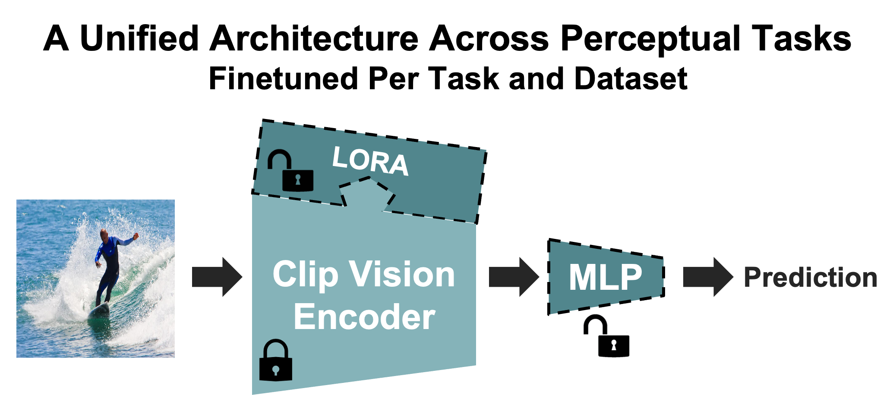
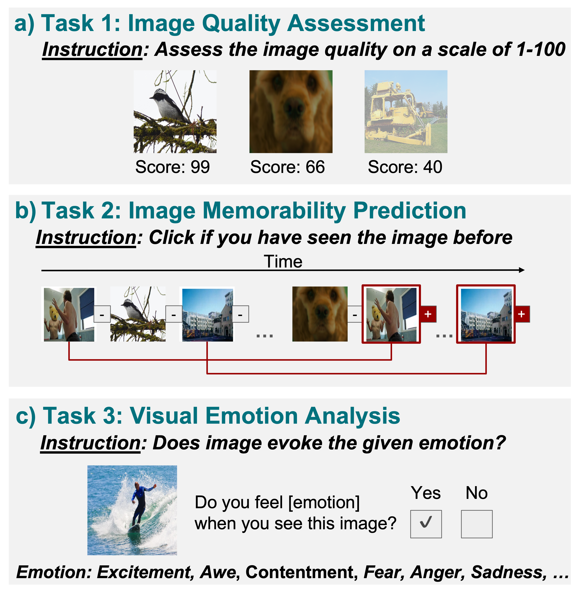
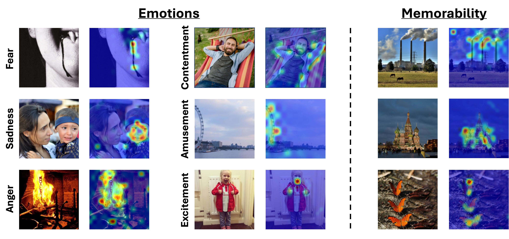

Don't Judge Before You CLIP
A Unified Approach for Perceptual Tasks
Weizmann Institute of Science
*Denotes Equal Contribution

Abstract
Visual perceptual tasks aim to predict human judgment of images (e.g., emotions invoked by images, image quality assessment). Unlike objective tasks such as object/scene recognition, perceptual tasks rely on subjective human assessments, making its data-labeling difficult. The scarcity of such human-annotated data results in small datasets leading to poor generalization. Typically, specialized models were designed for each perceptual task, tailored to its unique characteristics and its own training dataset. We propose a unified architectural framework for solving multiple different perceptual tasks leveraging CLIP as a prior. Our approach is based on recent cognitive findings which indicate that CLIP correlates well with human judgment. While CLIP was explicitly trained to align images and text, it implicitly also learned human inclinations. We attribute this to the inclusion of human-written image captions in CLIP's training data, which contain not only factual image descriptions, but inevitably also human sentiments and emotions. This makes CLIP a particularly strong prior for perceptual tasks. Accordingly, we suggest that minimal adaptation of CLIP suffices for solving a variety of perceptual tasks. Our simple unified framework employs a lightweight adaptation to fine-tune CLIP to each task, without requiring any task-specific architectural changes. We evaluate our approach on three tasks: (i) Image Memorability Prediction, (ii) No-reference Image Quality Assessment, and (iii) Visual Emotion Analysis. Our model achieves state-of-the-art results on all three tasks, while demonstrating improved generalization across different datasets.
Our Framework

Perceptual tasks rely on subjective human judgment. We show in (b) an illustration of CLIP’s training samples, which include human-written captions. These human-generated annotations contain not only factual image descriptions but also human sentiments, preferences, and emotions. This suggests that CLIP can serve as a prior for perceptual tasks. Our approach (c) leverages CLIP’s prior knowledge to address multiple perceptual tasks with minimal task-specific adaptation. We achieve state-of-the-art performance across three distinct perceptual tasks.

Leveraging the CLIP vision encoder, following an MLP head, our architecture maintains a simple, shared structure across diverse perceptual tasks. With lightweight LoRA adaptation, it fine-tunes efficiently for each task independently, effectively exploiting CLIP’s prior perceptual knowledge.
Visual Perceptual Tasks

Image Quality Assesment
Models are evaluated on seven common Image Quality Assesment benchmarks, reporting the median SRCC (Spearman’s Rank Correlation) and PLCC (Pearson Linear Correlation) across 10 splits, along with the number of trainable parameters. The table shows that our model, PerceptCLIP, outperforms all leading IQA-dedicated methods, achieving the best performance, on six out of seven datasets while using significantly fewer trainable parameters.
Image Memorability & Emotion Classification
Image Memorability - Average SRCC and MSE across 5 splits of the LAMEM dataset are reported, showing that our model, PerceptCLIP, surpasses all previous methods. Emotion Classification - Accuracy results for binary and multi-class emotion classification on the EmotionROI (mean over five splits) and EmoSet datasets. Our model achieves state-of-the-art performance for both datasets.
Multi-Dataset Training Improves Performance
The table shows the benefits of training on multiple datasets within the same task, demonstrating significantly improved performance on smaller datasets. Results for all datasets (shown in the Supplementary) show that these multi-dataset models achieve state-of-the-art results across all benchmarks.
Attention Shift Toward Perceptual Cues

We present images along with the differences in their attention maps between our PerceptCLIP model and the pretrained CLIP vision encoder (displaying results from critical attention heads that most influence the perceptual predictions). This highlights the shift in attention, revealing how our model reallocates focus to perceptually meaningful regions
BibTeX
@article{zalcher2025don,
title={Don't Judge Before You CLIP: A Unified Approach for Perceptual Tasks},
author={Zalcher, Amit and Wasserman, Navve and Beliy, Roman and Heinimann, Oliver and Irani, Michal},
journal={arXiv preprint arXiv:2503.13260},
year={2025}
}